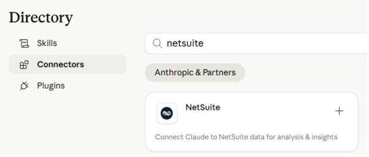
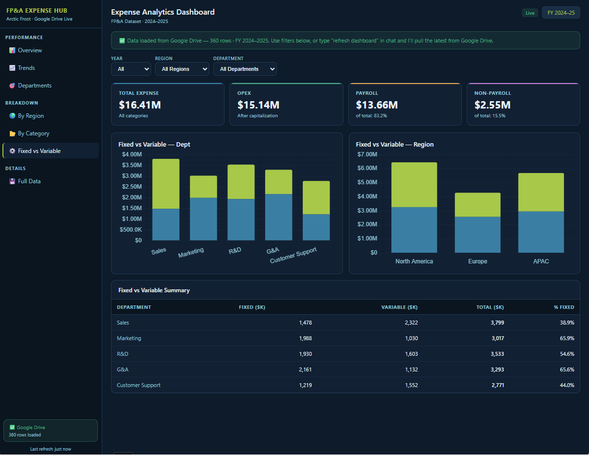

LIVE DEMO
דמו חי —
בניית Live Artifact מאפס
לוקחים Google Sheet אמיתי, מחברים Connector, ובונים דשבורד FP&A חי תוך דקות. הדגמה בזמן אמת — לא הקלטה, לא Slides.
STEP 01
התחלה מ-Google Sheet אמיתי
פותחים את Cowork, New Artifact, ומדביקים את הקישור ל-Sheet — בלי לפתוח מראש, בלי הכנות מוקדמות.
STEP 02
חיבור ל-Google Drive Connector
בוחרים Connector, מאשרים הרשאות, ו-Claude קורא את הנתונים מהמקור — בזמן אמת מול ה-API.
STEP 03
התוצאה — דשבורד חי
KPIs, גרפים, טבלאות — נבנים אוטומטית. משנים נתון ב-Sheet, ורואים שזה משתנה ב-Artifact מיד.
PROMPT לדוגמה — להעתקה ושימוש
Build a live FP&A Analytics Hub from my Google Sheet [link].
Use these tabs only:
- Monthly_Summary
- Revenue_By_Segment
- Bridge_Budget_to_LE
- PL_Variance
Dashboard requirements:
- KPI cards for Revenue, Gross Margin, EBITDA, and Cash Runway using the latest month from Monthly_Summary
- Show Actual, Budget, and Variance vs Budget for each KPI
- Monthly Revenue vs Budget trend line chart using Month, Revenue_Actual, and Revenue_Budget from Monthly_Summary
- Revenue mix donut chart by segment using the latest available month from Revenue_By_Segment
- Budget-to-LE waterfall chart using Bridge_Budget_to_LE
- P&L variance table using PL_Variance with columns Budget, LE, and Variance
Layout:
- Left sidebar with Performance, Forecasting, Operations
- Clean modern finance dashboard design
- Arctic Frost color theme
Data behavior:
- Refresh automatically when the Google Sheet updates
- Do not infer missing fields
- Use only the tab and column names exactly as provided
- Treat Month as a monthly date field
- Format currency with commas and no decimals
- Format Cash Runway in months with 1 decimal place
אזהרה חשובה לפני כל חיבור Connector: תמיד קוראים את Tool Scopes וההרשאות שה-Connector מבקש. נתונים פיננסיים = רגישות גבוהה. עדיף Connector מצומצם שעובד מ-Connector "פתוח" שאתם לא ממש יודעים מה הוא רואה.
01 · בחירת Connector

02 · הרשאות & Tool Scopes

03 · דשבורד התוצאה — Live FP&A
